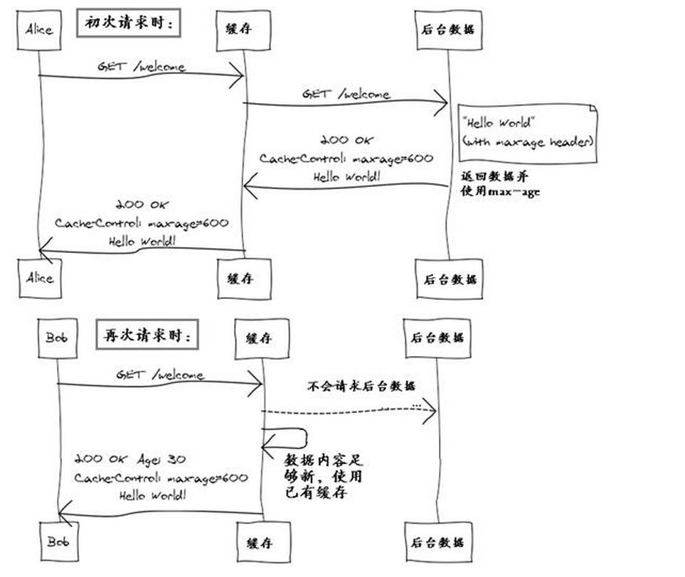

REST: Representational State Transfor是当前比较流行技术，可以降低耦合度、复杂?
REST可以将服务器内容缓存到中间层，减少服务器的访问
使用Jersy框架可以很容易实现rest api和client。
对于client，jersy提供一个Client实现，初始化时加入默认的config，之后使用WebSource类进行目标元素的获取，之后构建一个MultivaluedMap类的header，作为报文的header内容，通过WebSource的handle方法进行请求，并取回相应的response。
Header中的文字是含有敏感信息的，因此需要我们自己进行加密，否则如果被人截获这个请求，很容易就知道我们的帐号密码或者其他重要信息。
好在javax.crypto包中提供的加密的类及算法。 首先获取Mac类中的一个实例，将待加密的字符串转换成byte数组，利用Mac中的dofinal进行加密，再通过Apache包中的Base64进行encode，最后转化为字符串。 进行认证的时候与加密过程类似，但工序相反，首先通过Base64类进行decode，之后利用Mac类中的dofinal对原始字符串进行加密，之后与参数进行对比得出结果。
之前碰到一点问题就是在windows上跑通的加密算法在linux上并不能验证通过，这是由于linux平台与windows平台在进行encode和decode方式不同导致的。
服务端认证中，采用模板方式，将认证过程实现在父类中，主要算法在父类中实现，其余参数计算等在子类中实现。在服务端用同样方式和密钥进行加密，之后比较客户端发来的加密信息与服务端自己产生的加密信息比较，如果完全相同就返回true表示认证通过。